싱싱장터 아름점(2호점)은
싱싱장터 아름점(2호점)은 2017.12.26일 아름동 주차타워 1층에 개장한 농축산물 상설 직매장으로, 1호점 도담점에 이어 앞으로 세종시 내에서는 물론 전국의 로컬푸드 관계시장 중 가장 큰 순환경제 효과를 낳는 모델로 주목받게 될 것입니다.
현재 아름점에 갓 따온 농산물 출하를 위해 300여 농가가 매일 새벽 신선한 로컬푸드를 납품하고 있으며 2호점 인근 지역 소비자들에게 건강한 먹거리 제공을 위해 정진할 것입니다.
| 개 장 일 | 2017.12.26 |
|---|---|
| 위 치 | 세종특별자치시 아름동 1352번지(주1-15블럭) 주차타워 1층 |
| 규 모 | 946.56㎡ |
| 주요시설 | 판매장, 포장작업장, 사무실, 주차시설 |
공간배치도
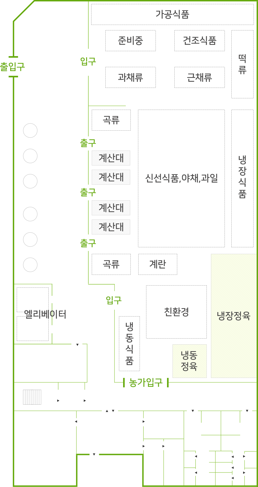
아름점(1호점) 시설사진
- 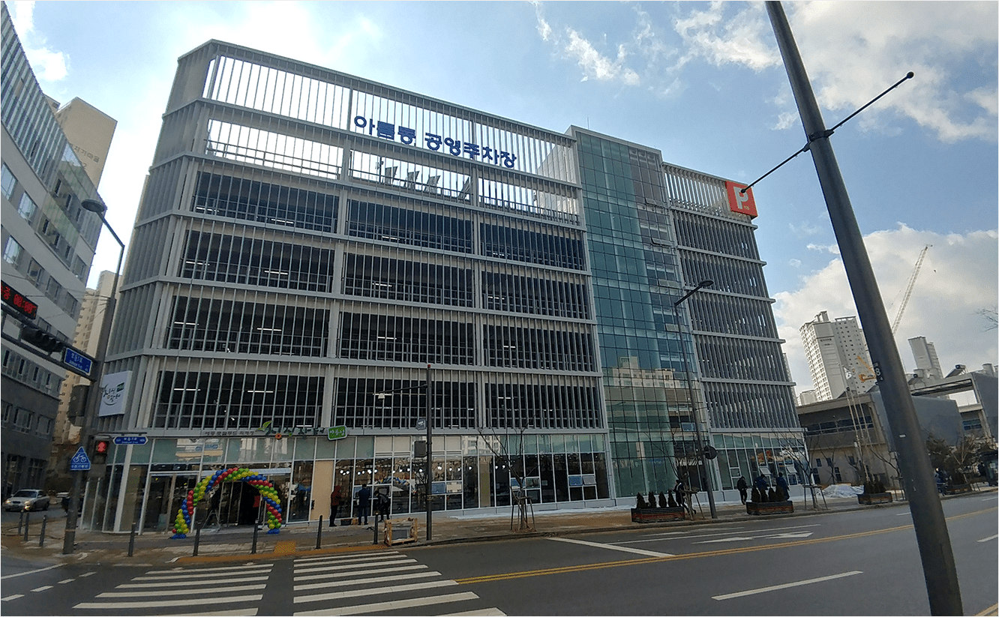 아름점 외부 전경
- 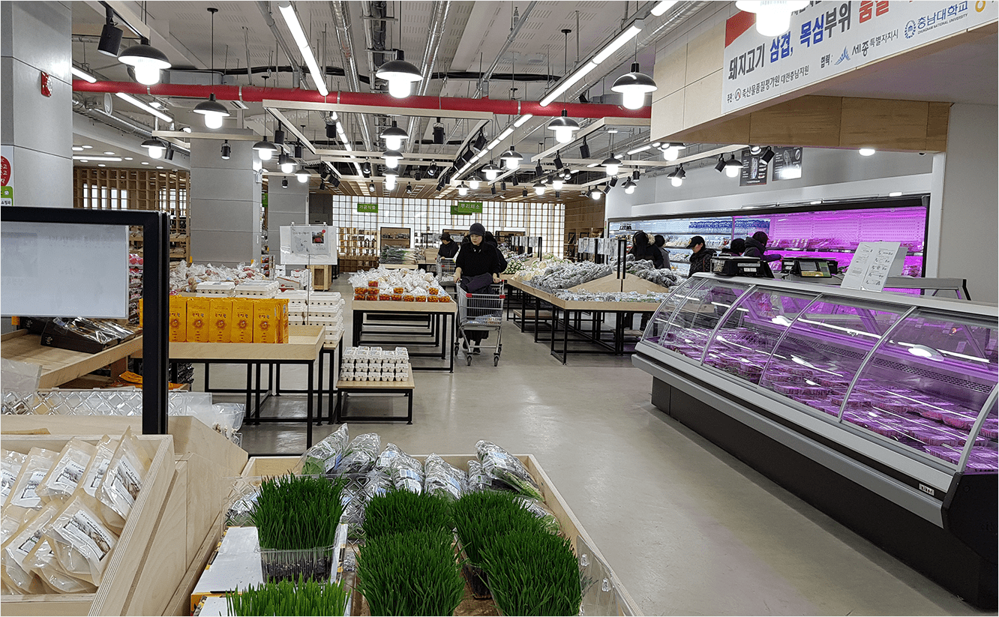 아름점 내부 전경
- 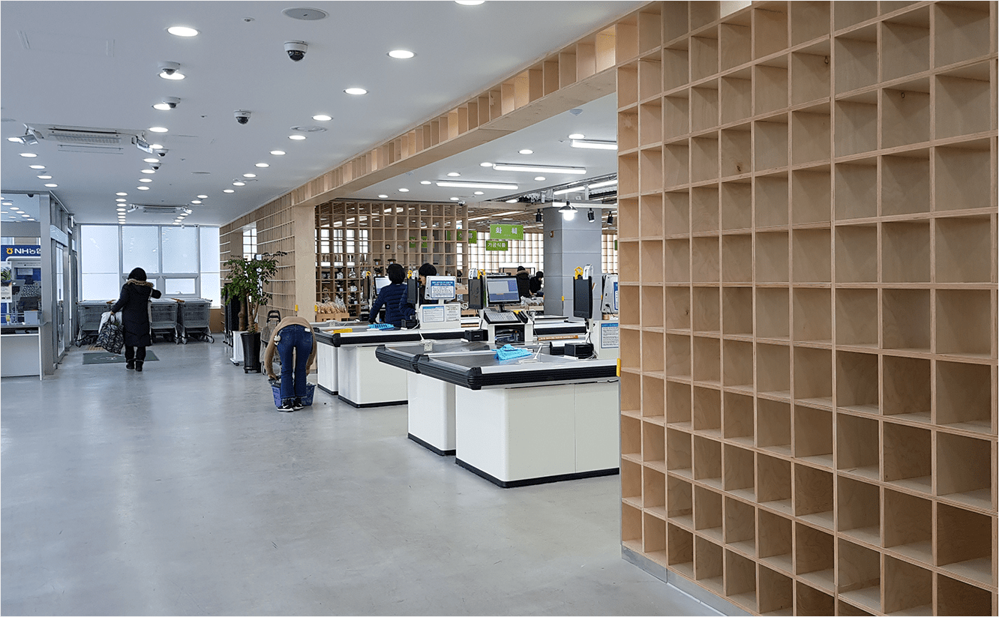 계산대
- 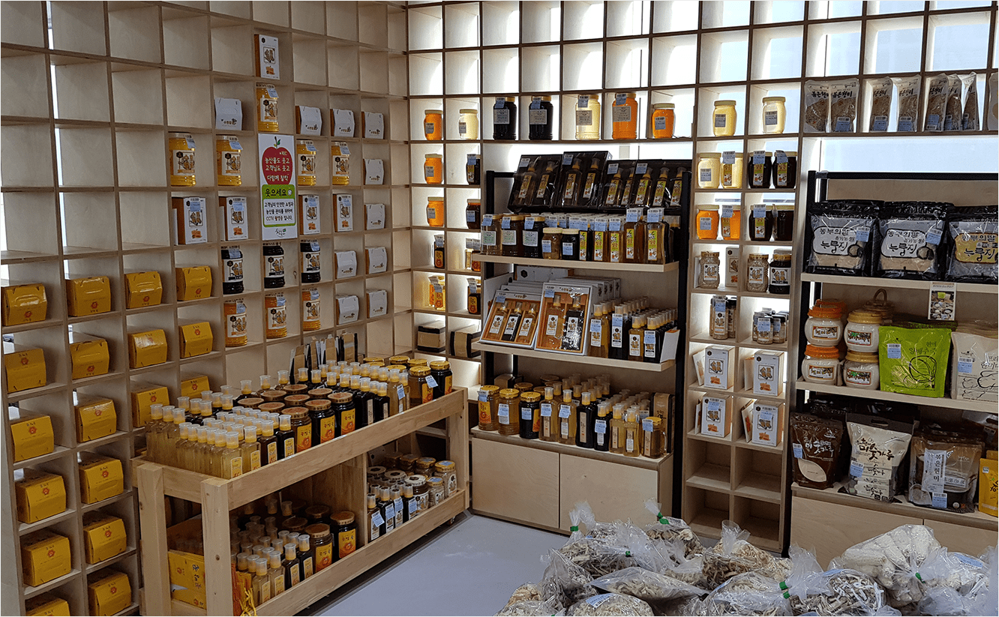 가공 식품 매대
- 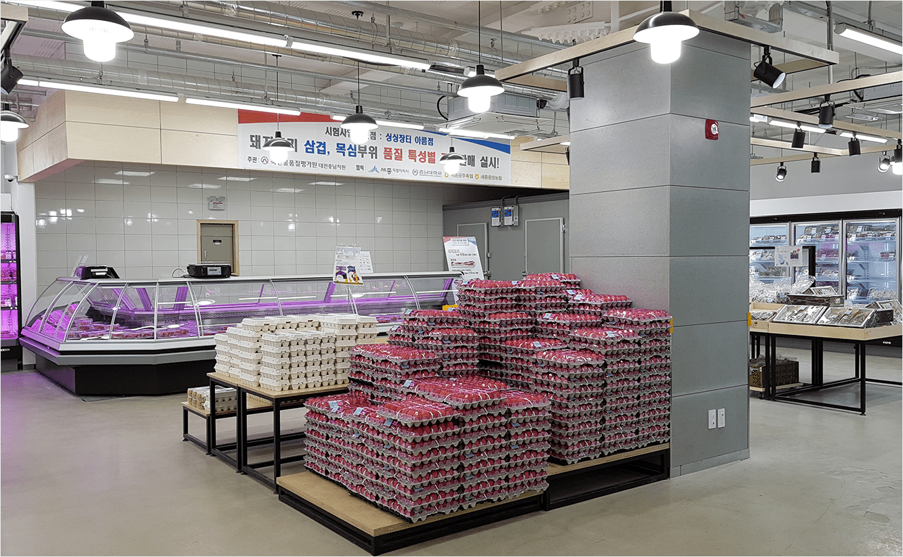 계란 및 축산물 판매
- 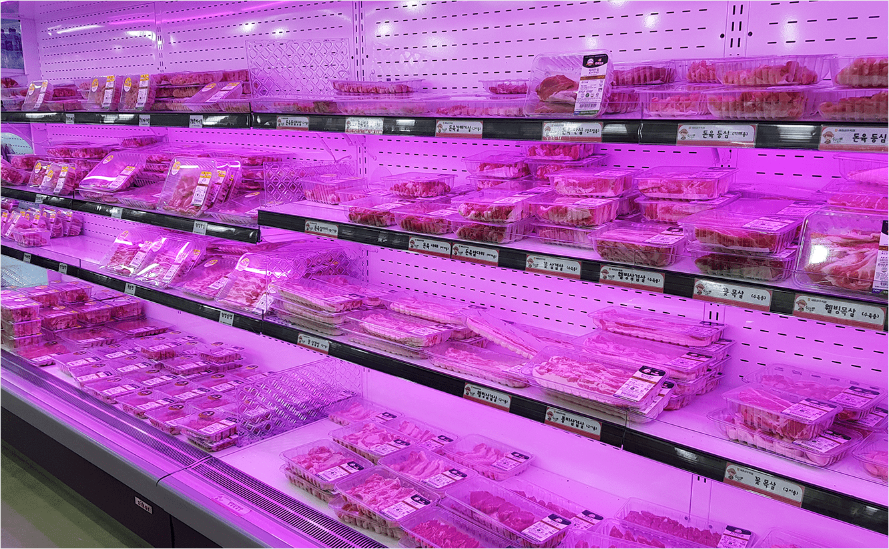 조명부터 남다른 고기 매대
- 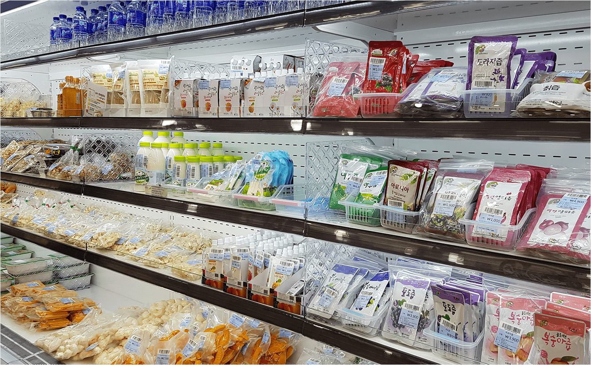 냉장보관제품
- 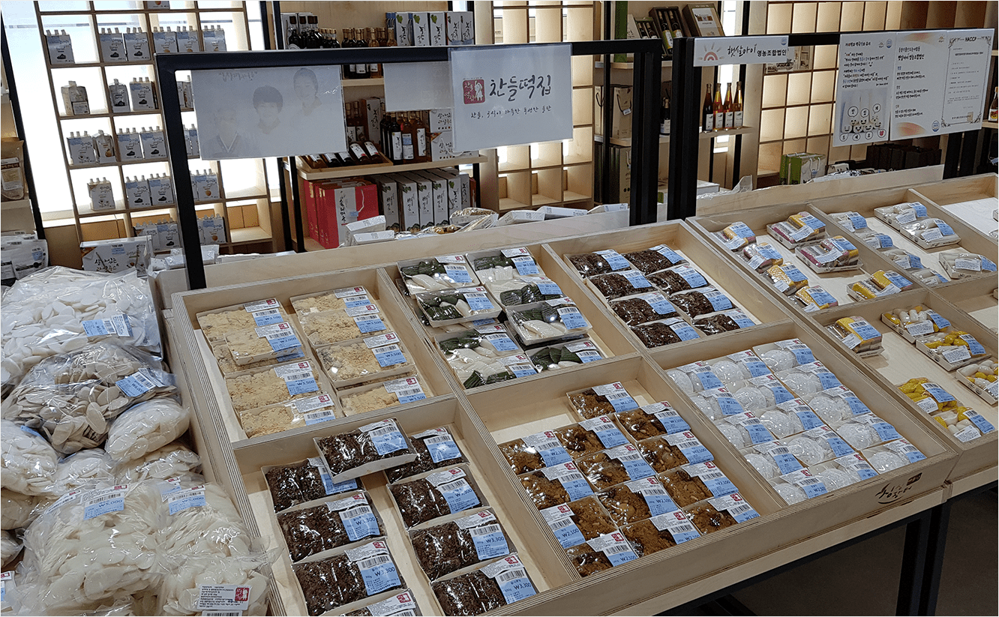 세종산 쌀로만 만든 떡 매대
- 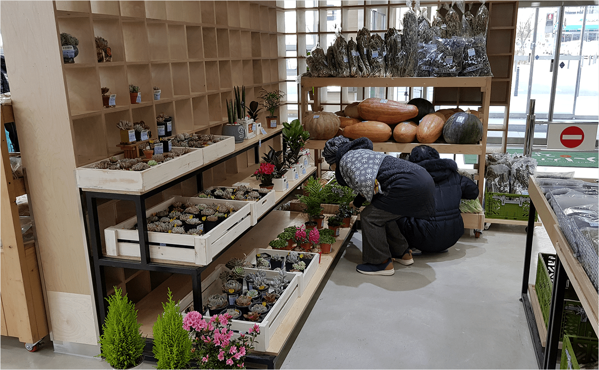 예쁜 화초 판매대
- 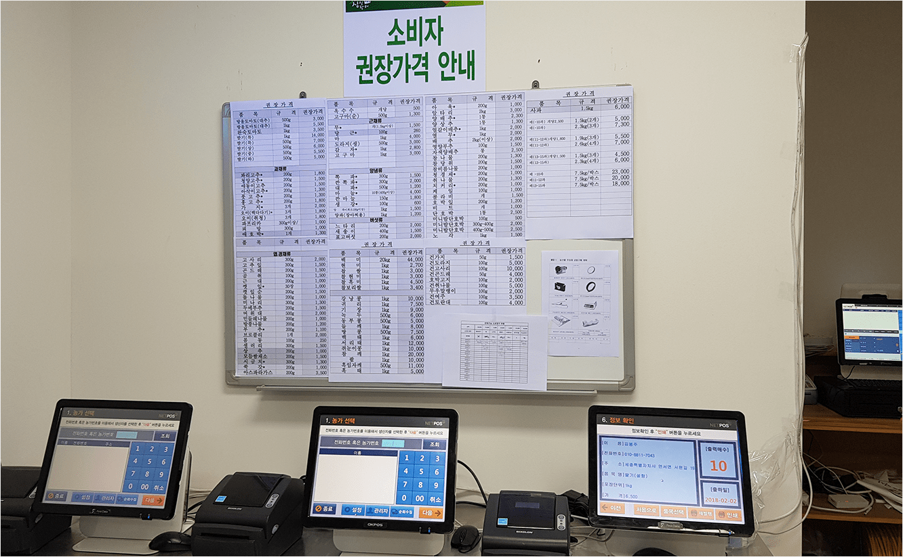 상품가격 농가자율관리실
- 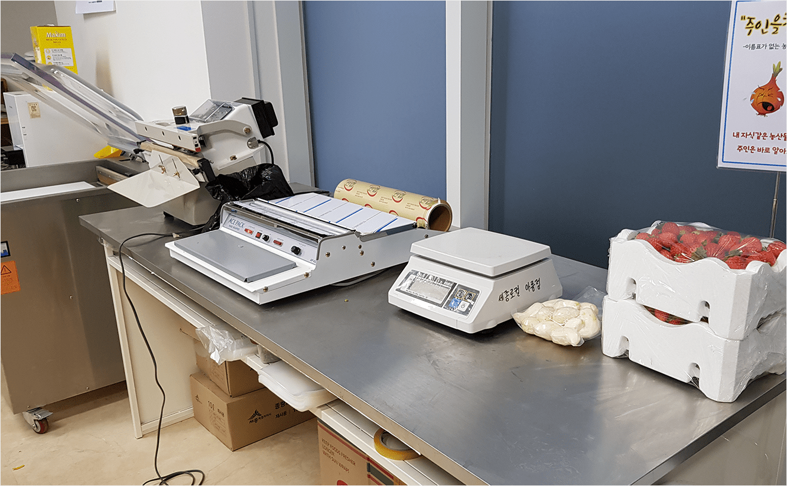 포장대
- 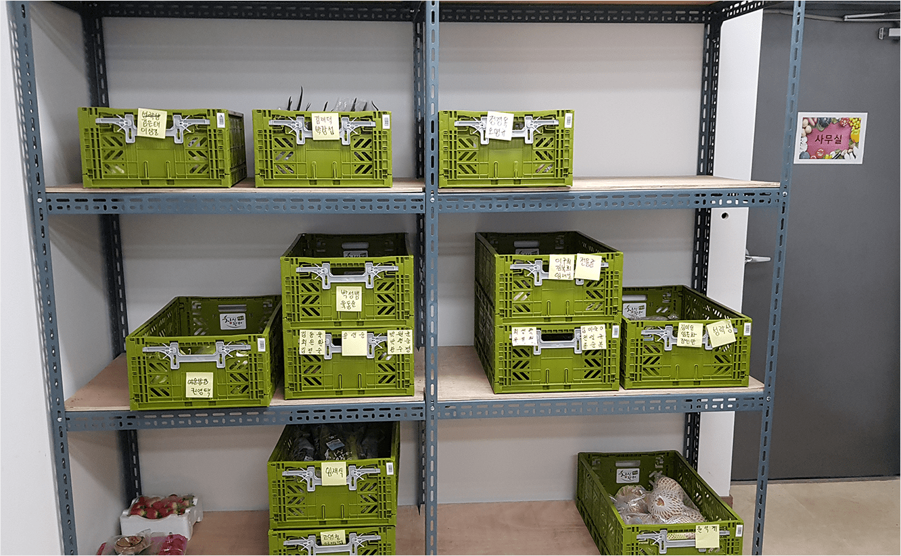 남은 상품 반납공간
- 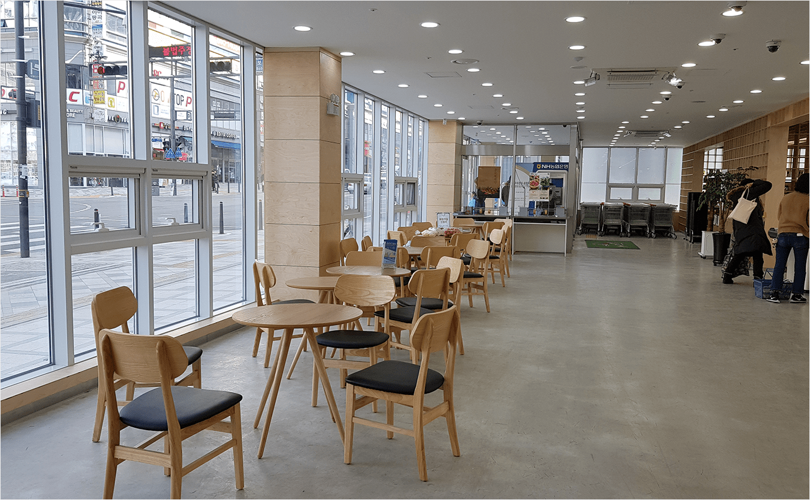 휴게공간
- 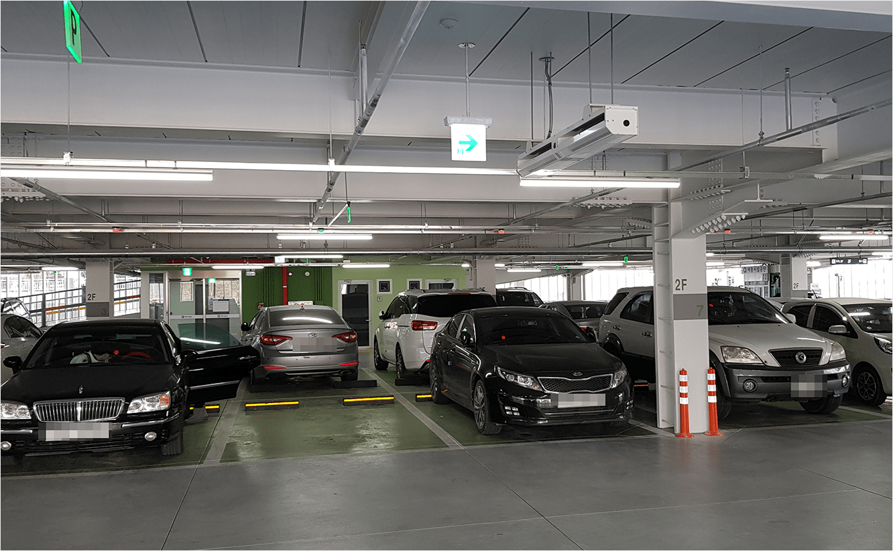 주차장(주차타워)